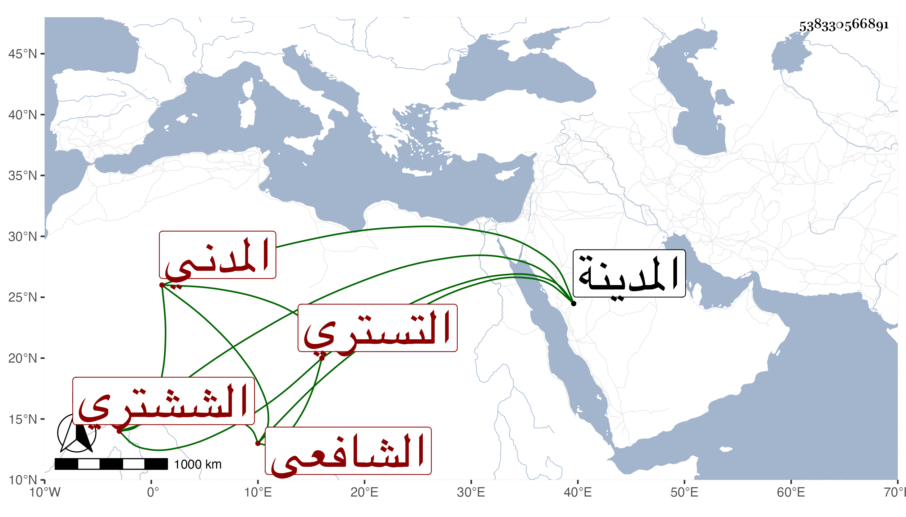

0902Sakhawi.DawLamic.ITO20230111-ara1.EIS1600.538330566891
Biography ID: 538330566891
171
عبد الله بن محمد بن أحمد بن عثمان الجمال أبو محمد بن الشمس بن أبي العباس الششتري وربما قيل له التستري المدني الشافعي المذكور أبوه في المائة قبلها . ولد سنة خمس وسبعين وسبعمائة ظنا كما قرأته بخطه وقيل بعدها وسمع علي ابن صديق بعض الصحيح وحدث أجاز لي ، وكان خيرا فاضلا جيد الخط ملازم الإقامة بالمسجد النبوي ولوفور ثقته كان أمين الحكم بالمدينة . مات في مستهل جمادى الأولى سنة ستين ، ودفن بمقبرتهم بالقرب من سيدنا إبراهيم من البقيع رحمه الله .
